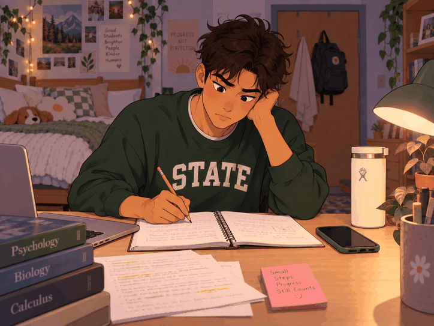

Make 4 — A loop of distraction

Animation stopped. A still frame is displayed.
Reflection
The image's repetition changes meaning by showing that it is an endless loop of getting distracted while doing work. If the GIF were just a still image, it would either just look like a person sitting on their phone, or a person studying. The looping affects attention because the viewer keeps seeing the same cycle happen. The student tries to work, gets distracted, puts the phone down, and then picks it back up again. After seeing it repeat several times, the distraction becomes the main idea of the GIF. The joke in the GIF is that the student never escapes the endless cycle. I think the human choice in the GIF is its relatability to the situation in the GIF. It comes from deciding on the situation of the GIF and making it something that humans would find funny or relatable. I chose the idea of showing a student getting distracted by homework, and also chose the style of animation to be a cartoon type of look. I also chose the exact order of the actions and how each frame should look like. The pattern in this is the student studies, picks up their phone, and does it all over again. The AI essentially just drew exactly what I was describing. I fully came up with the original idea for the GIF and how it should look. I think the authorship in this case is complicated, since the idea was mine but the AI was the visuals.
Attribution and AI use
Tools used: Chat GPT, picture of myself.
AI prompts (if any): Make a gif of me as a cartoon doing homework in a college dorm room, and then getting distracted and picking up a phone, then putting it down, and then picking it up again. Make it loop so the joke is that the person keeps getting distracted and then going on their phone. Make it around 5-6 frames.
What the AI generated: The cartoon character, background, and different frames of the GIF.
What you changed, edited, or remixed: I chose the idea, character appearance, order of the frames, timing, and looping structure.